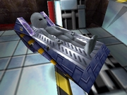

|
| Perfect
Dark : Découverte
et Test |
| Nous sommes Trois Ans après Goldeneye, et sur Internet, beaucoup de choses circulent : images, vidéos, intrigue, trucs plus ou moins dévoilés. Le Fan de Goldeneye a faim, le Fan de Goldeneye regardeà quoi va ressembler la Suite de son jeu Préferé. L’effet de Surprise de Perfect Dark est donc un peu mince, puisqu’il est une Suite : Même maniabilité ou presque, même Moteur Graphique, même Gameplay, tout est parti pour que Perfect Dark soit une Version Améliorée de Goldeneye, mais le Jeu étant fait par rare, on est attend plus ! Après avoir été maintes fois retardé, le Jeu sort enfin, et je réussis à me procurer la Version US, avant que ne sorte la Version Européenne. Dès la Présentation, l’Ambiance est là, soignée, comme pour Goldeneye. Graphiquement, Perfect Dark enfonce Goldeneye. Beaucoup plus lisse, plus fin, plus coloré, le Jeu étant axé Science Fiction, les Graphistes peuvent se permettre plus d’audaces Graphiques. Ces audaces sont bien pensées, malgré les Limites de la Nintendo 64. Ainsi, les Niveaux sont réellement variés, la Gamme Colorée est beaucoup plus étendue. Le jeu propose également un Mode Haute Résolution, qui lisse encore plus les Graphismes, mais cela entraîne fatalement des ralentissements. |

